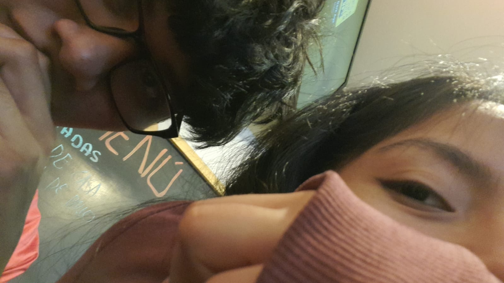

Hola Lisbeth,
No vengo con excusas, sino con la verdad. Me equivoqué, y cada segundo sin ti lo siento como un eco que me recuerda mi error. Esta página representa cuánto he reflexionado y mi forma sincera de pedirte perdón.
Te pienso cada día. En cada tulipán que veo y te prometo: que haré las cosas bien, con paciencia, respeto y todo el amor que siento por ti... sea cual sea tu decisión.
🌷
🌷
🌷
🌷
🌷
Te extraño, y te quiero. No lo olvides.
“No hay amor perfecto, pero sí decisiones sinceras para cuidar lo que se ama.”
Aquí estaré, dispuesto a reconstruir lo que rompí... con o sin ti. Sé que fue mi culpa todo lo que pasamos, y te pido perdón desde el fondo del alma. Aceptaré tu decisión, si decides no saber nada más de mí.
Recuerda esto:
- 🌷 Eres una gran chica
- 🌷 Estoy aprendiendo de mis errores
- 🌷 Nunca es tarde para hacerlo mejor